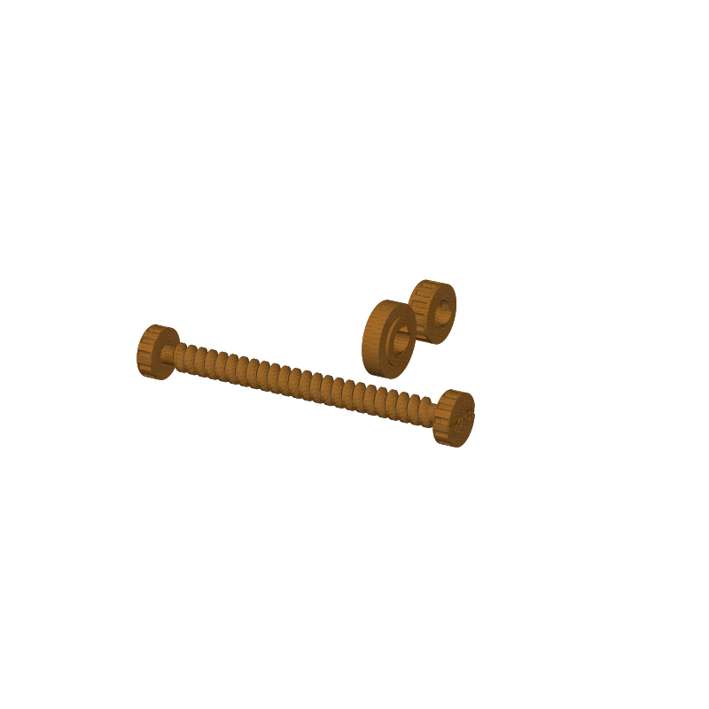

Opisometer STL, a screw-type map distance tool in three parts
An opisometer measures a winding route on a paper map. Set the wheel at the start of the trail, roll along every bend, and the wheel screws itself down the threaded shaft as it spins. Route length on the map is the wheel's travel along the shaft times 20.1, read against any ruler.
Three printed parts, no fasteners. The shaft carries a trapezoid thread at a 2.5 mm pitch. The wheel is 16 mm across, so one turn covers 50.3 mm of map and advances the hub 2.5 mm along the shaft. The knurled thumb nut locks the zero against the end knob. Full scale is 54.6 mm of travel, a 110 cm route on the map: 27.4 km of trail on a 1:25000 sheet, 54.9 km on 1:50000. Longer routes: re-zero and add the segments.
This page carries the measured spec sheet: per-part dimensions taken from the mesh, the thread geometry behind the 20.1 ratio, and preview renders, so you can check the mechanics before you slice.

Spec sheet, measured from the mesh
| Spec | Value |
|---|---|
| Layout as exported | 73.0 × 60.0 × 16.0 mm, the three parts laid out in a row for printing (rim faces on the bed) |
| Shaft | 73 mm long, 11 mm across the knobs, 66 mm threaded core, trapezoid thread, 2.5 mm pitch, right hand |
| Wheel | 16 mm measuring wheel, 4 mm rim, 10.4 mm threaded hub with 5.4 mm of thread engagement |
| Thumb nut | 13 × 13 × 7.6 mm, 16 knurl dimples, screws against the zero knob to lock the zero |
| Thread ratio | One wheel turn = 50.3 mm of map = 2.5 mm along the shaft, 20.1 : 1 |
| Full scale | 54.6 mm of wheel travel = a 110 cm route (27.4 km at 1:25000, 54.9 km at 1:50000) |
| Engraving | Far knob reads 50.3 mm per turn, for counting turns on long legs |
| Volume | 3.3 cm³ total, about 4.1 g of PLA (shaft 1.96, wheel 0.82, nut 0.54) |
| Print time | About 0.4 h, PLA, 0.4 nozzle, 0.2 mm layers |
| Assembly | No fasteners; the wheel and the nut screw onto the shaft |
| Mesh check | Watertight, winding consistent, 3 bodies, 16,474 faces (trimesh 5.1.0, 2026-09-10) |
| Files | STL and 3MF plus a parametric generator script |
| License | CC-BY 4.0 on the MakerWorld upload; royalty free, no AI training, direct from us |
How the measuring works
The ratio comes from the wheel and the thread. A 16 mm wheel rolls out π × 16 = 50.27 mm of map in one turn, and a 2.5 mm thread advances the hub exactly 2.5 mm in that turn. Divide one by the other and every millimeter of wheel travel along the shaft means 20.1 mm of route on the map. The thread pitch sets the ratio, and both numbers are generator parameters.
Reading takes a ruler. Stand the shaft end on the scale, read the gap between the zero knob face and the wheel hub in millimeters, and multiply by 20.1. The far knob carries the 50.3 mm per turn engraving, so on long legs you can count turns instead of reading small gaps. Precision is about 0.5 mm on the shaft, 10 mm on the map, plus a little backlash in the thread. Keep grit off the wheel edge, since that edge is the measuring surface.
Full scale is 54.6 mm of travel, so one zeroing covers a 110 cm route: 27.4 km of trail on a 1:25000 sheet, 54.9 km on 1:50000. For a longer route, re-zero at a bend and add the segments.
Print notes
The parts come off the generator already laid out on their rim faces, so everything slices as placed. The threaded parts carry real thread geometry, and the mesh is checked before upload: watertight, winding consistent, one solid body per part.
I have not test-printed this one yet. The thread radial clearance is 0.15 to 0.2 mm, guessed for a 0.2 mm nozzle. If the wheel spins but does not travel, blobbing is binding the thread; a pass with a hobby knife or a hot-water dip on the hub frees it. If it slips without gripping, a hair of wax on the thread helps. Every dimension is a parameter in the generator (gen_opisometer28.py): wheel diameter, pitch, shaft length and knob size, and the script recomputes the ratio when you change any of them. If you print it, post a make with how the thread came out.
Where to get the files
The opisometer is in the MakerWorld review queue and goes public on our MakerWorld profile when the review clears.
More printed organizers and tools, with a status table for the pool: 3D printed desk organizers and printable tools.
FAQ
How does an opisometer read a curved route?
A dial or a straight ruler forces you to approximate a curve with segments. The wheel follows the line instead: roll it along every bend, and the thread records total distance as axial travel. One reading at the end gives the route length to about 10 mm on the map.
What map scales does it cover?
Any scale, because the ratio is fixed and the route length is scale-free. A full 110 cm route is 27.4 km on a 1:25000 hiking sheet and 54.9 km on 1:50000. On other scales, multiply the shaft reading by 20.1 to get the on-map length, then apply the map's scale bar.
Why three parts instead of print-in-place?
The thread needs a radial clearance of 0.15 to 0.2 mm, and a print-in-place screw that fine tends to fuse at standard settings. Printed separately, each part comes out clean, and assembly is two turns of the screw: the wheel and nut thread straight onto the shaft, no glue, no pins.